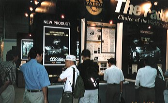

Flash ! DX
Reportの読み方
【 Back Issues Aug.2000】
TIME:UTC(JST-09:00)
31.Aug.2000(15:00f)
*9M-TV 04:30- 48.240/260 --
*BY-TV 05:00- 49.750 --
VK6RPH 06:05- 50.066 CW Beacon
VK6JJ 06:07 50.110/125 SSB/CW
VK8RAS 06:20- 50.047 CW Beacon
V63MC 06:36 50.120 SSB
VK6RSX 07:15- 50.304 CW Beacon
9M2TO/b 07:30- 50.005 CW Beacon
*VK-TV 09:40- 46.172 --
VK4FNQ 09:42 50.110/130 SSB
P29BPL 09:45- 50.029 CW Beacon
VK4RIK 09:45- 52.445 CW Beacon
VK6JQ 11:12 50.110 CW
VK4ABW 11:19 50.110 SSB
|
◎ 日中は珍しくオーストラリア西南部のVK6(パース近郊=OF88)が強力に入感していた。
何時も早い時間帯から入感する46MHz帯のVK-TV、VK4などはイブニングタイプのTEPに変わってからようやく聞こえてきた。
|
30.Aug.2000(15:00g)
*BY-TV 01:00- 49.750 --
*VK-TV 02:00- 46.172 --
*9M-TV 04:00- 48.240/260 --
*DU-TV 04:00- 48.250 --
9M2TO/b 04:05- 50.005 CW Beacon
VK4CXQ 04:15 50.110/120 CW
VK8RAS 05:30- 50.047 CW Beacon
VK6RSX 07:05- 50.304 CW Beacon
FK8CA 08:55 50.110 CW
VK4JH 09:12 50.110/115 CW/SSB
P29BPL 09:29- 50.029 CW Beacon
VK4WDM 09:36 50.110 SSB
KH6ND/KH5 10:21 50.110 CW
FR1AN 11:15 50.110/120 SSB
VR2KW 11:18 50.140 SSB
BG7OH 11:20 50.160 SSB
VR2XMT 11:35 50.130 SSB
BV2DP 11:55 50.110 CW
|
◎ 昼過ぎに9M2TO/bのビーコンが入感した後は散発的にVK4が聞こえる程度でコンデションはそれほど良いものとは思われなかったが、
10:00z頃からKH6ND/KH5(Palmyra)、11:00z頃からFR1AN(Reunion I.)が入感してきた。いずれもオープンしていた時間は短かいものだったが、
11:15z前後のFR1ANは1エリアでも強力に入感した。
|
29.Aug.2000(15:00e)
*VK-TV 01:00- 46.172 --
*BY-TV 04:00- 49.750 --
*9M-TV 04:00- 48.240/260 --
*DU-TV 04:00- 48.250 --
9M2TO/b 04:40- 50.005 CW Beacon
9M6SMC 04:40- 50.015 CW Beacon
BV2NT 07:13 50.110 SSB
9M6SMC 07:15- 50.015 CW Beacon
*VK-TV 08:30- 46.240 --
VK4CXQ 09:22 50.110 CW
VK4ABW 09:35 50.110 SSB
28.Aug.2000(15:00f)
*BY-TV 01:00- 49.750 --
*VK-TV 05:00- 46.172 --
*9M-TV 07:00- 48.240 --
*DU-TV 07:00- 48.250 --
9M2TO/b 07:26- 50.005 CW Beacon
V73SIX 07:28- 50.014 CW Beacon
KH6ND/KH5 08:00 50.107 CW
VK4BRG 08:20- 50.077 CW Beacon
9M6SMC 08:20- 50.015 CW Beacon
VK8RAS 09:45- 50.047 CW Beacon
VK6RSX 09:45- 50.304 CW Beacon
P29BPL 09:45- 50.029 CW Beacon
P29PL 09:47 50.110 SSB
VK8RAS 09:47- 50.047 CW Beacon
VK6RSX 09:47- 50.304 CW Beacon
DU1EV 09:51 50.115 SSB
VK4ABW 11:57 50.110 SSB
VK4CXQ 12:10 50.110 CW
VK4JH 12:18 50.110 CW
VK6JQ 13:15 50.116 CW
◎ 日中は静かな6mも夕方から夜間にかけて"活気"を取り戻してきている。昨夜は西日本からFR1ANの入感もリポートされた。
08:00z頃からCWで入感したKH6ND/KH5は強力だったが、CQを出していたのが50.107MHzと低めだったためか、
最初の10分ほどは呼ぶ局も少なくCQを連発する状態だった。
クラスターにリポートされた08:15z頃からようやくパイルが激しくなった。一時間後の09:00zにフェードアウト。
|
27.Aug.2000(15:00j)
*BY-TV 01:00- 49.750 --
*VK-TV 02:00- 46.172 --
VK4BRG 04:40- 50.077 CW Beacon
VK4ABW 04:40 50.110 SSB
VK4JH 04:58 50.110/115 CW
VK8RAS 05:30- 50.047 CW Beacon
VK6RSX 05:30- 50.304 CW Beacon
FK8CA 08:04 50.110 CW
YJ8WR/b 08:10 50.079 CW
VK4CLM 08:31 50.110 CW
VK4BRG 09:00- 50.077 CW Beacon
P29BPL 09:10- 50.029 CW Beacon
*9M-TV 09:15- 48.240 --
*DU-TV 09:15- 48.250 --
9M6SMC 09:15- 50.015 CW Beacon
VK4CXQ 09:41 50.110 CW
(FR1AN 09:43 50.110 SSB JA6)
VK4ABW 09:44 50.110 SSB
YJ8WR 09:46 50.110 SSB
VK4APE 09:53 50.120 SSB
V73SIX 10:00- 50.014 CW Beacon
V73AT 10:00 50.110 SSB
WH7C/DU3 12 07 50.130 SSB
YF1OO 13:23 50.110 CW
DU1EV 13:51 50.110/120 CW/SSB
9M6GY 14:20 50.110 SSB
26.Aug.2000(15:00c)
*BY-TV 01:00- 49.750 --
*VK-TV 03:00- 46.172 --
VK4JH 06:18 50.110 SSB/CW
VK6JQ 10:00 50.110 CW
VK8RAS 10:05- 50.047 CW Beacon
VK4RIK 10:05- 52.445 CW Beacon
VK4ABP 10:05- 52.346 CW Beacon
25.Aug.2000(15:00e)
*BY-TV 00:00- 49.750 --
*VK-TV 02:00- 46.172 -- weak
P29BPL 11:30- 50.029 CW Beacon
YC1MH 13:20 50.180 SSB
9M6SMC 13:35- 50.015 CW Beacon
9M6GY 14:12 50.110/120 SSB
24.Aug.2000(15:00g)
*VK-TV 04:00- 46.172/240 --
VK6RSX 04:30- 50.304 CW Beacon
VK4BRG 08:30- 50.077 CW Beacon
VK4ABP 08:30- 52.346 CW Beacon
YJ8WR/b 08:30- 50.079 CW Beacon
FK8CA 08:45 50.110 CW
VK8RAS 09:00- 50.047 CW Beacon
P29BPL 11:00- 50.029 CW Beacon
VK4FNQ 11:18 50.110 SSB
VK6JQ 12:13 50.110 CW
VK4ABW 12:20 50.110/120 SSB
VK4APE 12:40 50.110 SSB
YF1OO 13:21 50.110 CW
YC1EHR 13:33 50.110 CW
23.Aug.2000(15:00f)
*ZL-TV 01:30- 45.250 -- weak
*VK-TV 05:30- 46.172 --
*BY-TV 07:00- 49.750 --
VK4BRG 08:50- 50.077 CW Beacon
VK8RAS 09:15- 50.047 CW Beacon
P29BPL 11:00- 50.029 CW Beacon
VK4RIK 11:15- 52.445 CW Beacon
VK6JQ 11:18 50.110 CW
VK4APE 11:19 50.110 SSB
V73SIX 11:30- 50.014 CW Beacon
VK4CXQ 11:46 50.110 CW
P29KFS 12:08 50.110 SSB
YC1MH 13:04 50.110 SSB
YF1OO 13:21 50.110 CW
|
◎ 昨夜は強力なYC & 9M2'sに続いて、久しぶりにChagos IのVQ9QMが入感した。
20日には4S7YSGが入感するなど、夜間の東南アジアからインド洋方面のオープンが期待出来る様になった。
日中に強力に入感している49.750MHzのBY-TVも、今日はほとんど上昇して来なかった。
◎ FH/TU5AX・Chrisの参加で6mのアクティビティが期待されていたA5(Bhutan)のDXpediだが、
最新の情報によると、残念ながらChrisはこのグループのDXpediには参加しないと。
A5は9月3日から運用を開始する予定だが、160mと6mは"アンテナが上がり次第"運用を開始する。
6mはIC-706+AH3。14日までの予定。
|
22.Aug.2000(15:00g)
*BY-TV 00:00- 49.750 --
*VK-TV 01:00- 46.172 --
*ZL-TV 01:00- 45.250 -- weak
*9M-TV 04:30- 48.240/260 --
VK8RAS 06:30- 50.047 CW Beacon
VK6RSX 06:30- 50.304 CW Beacon
VK4ABP 07:30- 52.346 CW Beacon
VK4ABW 08:00 50.110 SSB
VK6JQ 08:03 50.110 CW
FK8CA 08:35 50.110 CW
VK4PU 08:58 50.110 CW
VK4ZJR 09:17 50.110 SSB
VK4RIK 13:00- 52.445 CW Beacon
P29BPL 13:00- 50.029 CW Beacon
VK4BRG 13:10- 50.077 CW Beacon
9M6SMC 13:25- 50.015 CW Beacon
9M2/JI1ETU 13:25- 50.085 CW Beacon
YC1MH 13:33 50.130/150 SSB
VK4APE 13:49 50.110/125 SSB
VQ9QM 14:50 50.105 CW
21.Aug.2000(15:00d)
*BY-TV 00:00- 49.750 --
*VK-TV 03:00- 46.172/240 --
*9M-TV 05:30- 48.240/260 --
*DU-TV 05:30- 48.250 --
YJ8WR/b 09:00- 50.079 CW Beacon
P29BPL 09:05- 50.029 CW Beacon
VK4ABW 09:09 50.110 SSB
◎ FTV-1000 待望の50MHzトランスバーター、遂に登場！
今年のハムフェアで"6mファン"の注目を集めていたのは、何と言ってもYAESUからMARK-V FT-1000MP専用として"参考出品"された50MHzのトランスバーター・FTV-1000だ。
FTV-1000はファイナル段にMARK-Vと同じMOS FET BLF147を使用したプッシュプル構成で、50MHz帯で200WPEPのハイパワーを実現している。
ファイナル段のA級動作も可能で、この動作時には50Wの最大出力となる。受信部のフロントエンドにはMARK-Vと同様にJ-FET×4のダブルバランスドミキサー。
RFアンプ部はSST-310×4によるハイダイナミックレンジ型アンプに加え、3SK131による高感度アンプの2種類のRFアンプから構成されていて、
これをフロントパネルからコントロール出来るようになっている。
以上はカタログでの説明だが、実際に動作状態でのテストは出来なかったものの、親機がMARK-V FT-1000MPと言うこともあり、
6mに於いてもかなりの性能が期待される。FTV-1000は電源にMARK-Vと同じ30Vの高電圧が必要となり、
今のところは他機との接続は考慮されていない。
FTV-1000のフロントパネルは、写真の様に何の変哲もないシンプルなものだが、トランスバーターとして必要な動作状態を把握するのは容易。
50MHz帯に切り替えた時には、親機の周波数表示は正(A)、副(B)共に「50MHz」に切り替わるため、
動作時には、MARK-V FT-1000MPに50MHz帯が内蔵された様な"錯覚"を覚える。
気になる価格は今のところ"参考出品"の段階なので発売時期と共に未定だが、"10万円前後"になりそう？とのこと。


FTV-1000のフロントパネル。左側の切り替えスイッチは上から、ATTのON/OFF、IPOの
ON/OFF、RF AMPの切り替え。
右側は上からAB/A動作の切り替え、BAND LOW/UPの切り替え、ANT切り替えの順。
|
20.Aug.2000(15:00f)
*BY-TV 00:00- 49.750 --
*VK-TV 04:30- 46.172/240 --
*9M-TV 04:30- 48.240/260 --
9M2TO/B 06:40 50.005 CW Beacon
(T88JC 08:47 50.110 CW/SSB JA7.8)
VK8RAS 08:50- 50.047 CW Beacon
4S7YSG 09:06 50.110/130 CW
VK4KK 09:17 50.110 SSB
4S7YSG 09:52 50.110 CW
YJ8WR 09:57 50.110 CW
V73SIX 10:00- 50.014 CW Beacon
P29BPL 10:00- 50.029 CW Beacon
HL1LTC 10:11 50.110 CW
VK4CWT 11:56 50.110 CW
YJ8WR/b 12:00- 50.079 CW Beacon
VK4BRG 12:00- 50.077 CW Beacon
VK4ABP 12:00- 52.346 CW Beacon
VK4RIK 12:00- 52.445 CW Beacon
VK6JQ 12:04 50.110 CW
V73AT 12:09 50.110 SSB
DU1EV 12:20 50.110/114 SSB/CW
T88JC 13:01 50.110/130 SSB ANT 240
9M6SU 14:40 50.110/115 SSB
|
◎ 午後から大陸方向が上昇。久しぶりに9M2TO/bのビーコンが聞こえていたが、この時間帯の9M2TO本人は、
21MHz帯で"SEA NET"のコンテストにQRVしていた。09:00z過ぎから入感してきた4S7YSGは、
50.130MHzにQSYしてからTVのBuzzの中に埋もれてしまった。09:50z頃から50.110MHzで再入感したが、
QSBが激しくコンデションは安定しない。
4S7YSG・佐竹さんからの情報によると、4S7から新たに4S7VGがTS-600でQRVを始めたとのこと。(TNX JF2HEV)
◎ 18日から3日間行われたパシフィコ横浜の「ハムフェア2000」も今日で終了。
例年に比べ来場者が減った感じだったが、特に毎年行われていたARRL職員によるDXCCのチェックがJARLの代行受付だけとなり、
こちらも申請者は激減。毎年顔を見せていたOH2BH等も今年は来日せず、DX関係者には淋しいフェアとなった。
|


YAESUから"参考出品"されたFTV-1000に質問が集中！
19.Aug.2000(15:00b)
*BY-TV 00:00- 49.750 --
*VK-TV 11:00- 46.172 --
V73SIX 11:00- 50.014 CW Beacon
P29BPL 11:00 50.029 CW Beacon
VK8AH 11:57 50.110 CW
VK8MS 12:00 50.110 SSB
VK6JQ 12:03 50.110 CW
18.Aug.2000(03:00a)
*BY-TV 02:00- 49.750 --
|
◎ 今日(18日)からパシフィコ横浜で「ハムフェア2000」(2000アマチュア無線フェスティバル)が始まった。
「ハムフェア2000」関係の情報はJARL Webで。
ハムフェア期間中は日中のDX入感リポートは休止します。
|
17.Aug.2000(15:00f)
*BY-TV 00:00- 49.750 --
*VK-TV 04:00- 46.172/240 --
*ZL-TV 04:00- 45.24/25/26-- weak
VK4RGG 06:55- 50.058 CW Beacon
VK8RAS 07:35- 50.047 CW Beacon
VK6RSX 08:00- 50.304 CW Beacon
FK8CA 08:28 50.110 CW
VK4BRG 09:20- 50.077 CW Beacon
VK6RSX 09:20- 50.304 CW Beacon
VK4ABP 09:25- 52.346 CW Beacon
VK4ZEK/MM 09:38 50.110 SSB
VK4CXQ 09:42 50.110/115 SSB/CW
FK8CA 09:43 50.110 SSB
VK4GPS 09:49 50.110 CW
|
◎ 夕方から入感してくる南太平洋方面の電波も、日を追う毎に信号が強力になってきている。
日中のEsの発生もめっきり少なくなって、そろそろコンデションも"秋型"に移行している気配。
◎ 明日(18日)からパシフィコ横浜で「ハムフェア2000」(2000アマチュア無線フェスティバル)が始まる。
「ハムフェア2000」の最新情報はJARL Webで。
|
16.Aug.2000(15:00g)
*BY-TV 00:00- 49.750 --
*VK-TV 05:00- 46.172 --
FK8CA 08:24 50.110 CW
VK6RSX 08:25- 50.304 CW Beacon
YJ8WR 08:40 50.110 CW CQ EU!
YJ8WR/b 08:55 50.079 CW Beacon
*9M-TV 09:00- 48.240/260 --
VK8RAS 09:19- 50.047 CW Beacon
KH8/N5OLS 09:24 50.110/105 CW
V73SIX 09:30- 50.014 CW Beacon
VK4CXQ 09:40 50.110 CW
YJ8WR 09:40 50.110 CW
P29BPL 11:55 50.029 CW Beacon
VK4FNQ 13:05 50.110 SSB
VK4ABW 13:10 50.110 SSB
◎ KH5(Palmyra) & KH5K(Kingman Reef)
10月中旬にQRVが予定されているKH5(Palmyra) & KH5K(Kingman Reef)のDXpeditionに、
日本からJH7OHF・小野さんの参加が決まった。正式な日程はまだ発表されていないが、
小野さんの参加でJAからのQSOもかなり期待出来るものとなった。
|
15.Aug.2000(15:00g)
*BY-TV 00:00- 49.750 --
*9M-TV 00:30- 48.240/260 --
*VK-TV 05:00- 46.172 --
FK8CA 08:39 50.110 CW
VK4BRG 08:50- 50.077 CW Beacon
VK4RGG 08:55- 50.058 CW Beacon
VK4CXQ 09:06 50.110 CW
VK4ZEK/MM 09:09 50.110 SSB
*VK-TV 09:40- 46.172 -- Evening type TEP
VK8RAS 09:45- 50.047 CW Beacon
P29BPL 11:00- 50.029 CW Beacon
VK4APE 11:00 50.110 SSB
V73SIX 11:00- 50.014 CW Beacon
P29KFS 11:25 50.110 SSB
VK6JQ 11:44 50.110 CW
VK4ABW 11:58 50.110 SSB
4W6UN 13:04 50.110/115 SSB
|
◎ イブニングタイプのTEPに変わってからのVK4's、P29は相変わらずアンテナ方向140-150度で強力。
ただし、同じ時間に聞こえるVK6はダイレクト。
|
14.Aug.2000(15:00f)
*BY-TV 02:00- 49.750 --
*VK-TV 06:30- 46.172/240 --
*ZL-TV 06:30- 45.24/25/26-- weak
VK4KK 07:08 50.110 SSB/CW
FK8CA 07:55 50.110 CW
VK4CXQ 09:36 50.110/120 CW/SSB
KH8/N5OLS 09:38 50.110/105 CW Beam 120 SC
YJ8WR 09:46 50.110 SSB Beam 120 SC
P29BPL 09:50- 50.029 CW Beacon
YJ8WR/b 09:51- 50.079 CW Beacon
VK4BRG 10:00- 50.077 CW Beacon
VK4ABP 10:00- 52.346 CW Beacon
VK4RIK 10:00- 52.445 CW Beacon
VK4ABW 11:58 50.110 SSB
VK4CXQ 12:05 50.113/110 CW
VK6JQ 12:46 50.110 CW
VK4APE 13:43 50.110 SSB
|
◎ 心配された台風9号も伊豆諸島の東をかすめただけで、関東地方に影響をおよぼす事もなく過ぎ去った。
09:30z頃からイブニングタイプのTEに切り替わってVK'sの信号は上昇。
この時間帯の伝搬は、アンテナ方向が140-150度。
|
13.Aug.2000(15:00e)
*BY-TV 00:00- 49.750 --
*VK-TV 09:30- 46.172 --
VK4BRG 09:43- 50.077 CW Beacon
VK4CXQ 09:46 50.110/120 CW
VK4GPS 09:46 50.110 CW
VK4ABW 09:52 50.110 SSB
VK4JSR 09:56 50.110 SSB
VK4APE 09:56 50.110 SSB
VK4KK 10:00 50.110 SSB
P29BPL 10:00 50.029 CW Beacon
VK4ABW 13:00 50.110 SSB Beam 150 SC
◎ 昨日は夕方から、110-120度方向のスキャッターで早いフラッターを伴ったVK/ZL-TVとYJ8、VK4、V73などが入感していたが、
今日はこの時間帯に昨日の様な兆候は無かった。
VK4がQSOしていたKH6の信号がJAでは聞こえなかったので、"反射体"は近距離だったのかも？。
台風9号が伊豆諸島、関東地方に接近している。
|
12.Aug.2000(15:00f)
*BY-TV 00:00- 49.750 --
*9M-TV 05:00- 48.240/260 --
*VK-TV 08:30- 46.172/240 -- Beam to 120 SC
*ZL-TV 08:30- 45.24/25/26-- Beam to 120 SC
V73SIX 08:40- 50.014 CW Beacon
VK4CXQ 08:45 50.110/100 CW Beam to 120 SC
YJ8WR 08:57 50.110 SSB Beam to 120 SC
VK4ABW 09:25 50.110 SSB
V73UX 09:55 50.110/130 SSB
YJ8WR/b 10:00 50.079 CW Beacon
11.Aug.2000(15:00b)
*BY-TV 08:00- 49.750 --
◎ 日中は49.750MHzのBY-TVも入感しない"落ち込んだ"コンデション。
イスラエル(4X/JM1LJS)に続いて、パレスティナ(E4/JM1LJS)から運用しているJM1LJS
・海さんとの6mのQSOがJY9NX、5B4AGM、4Z4DX、EU'sなどから報告されている。
運用は14日までの予定だが、いずれにしてもこのコンデションではJAからのパスは困難。
|
10.Aug.2000(15:00g)
*BY-TV 00:00- 49.750 --
*ZL-TV 00:30- 45.250 --
*VK-TV 05:00- 46.172/240 --
*ZL-TV 05:00- 45.24/25/26-- weak
VK4GPS 09:38 50.110 CW
VK8RAS 09:40 50.047 CW Beacon
P29PL 09:49 50.110 CW/SSB
P29BPL 09:49- 50.029 CW Beacon
VK4BRG 09:50- 50.077 CW Beacon
VK4ABP 09:50- 52.346 CW Beacon
VK6JQ 10:05 50.115 CW
P29KFS 12:55 50.110 SSB
4W6UN 13:05 50.115 SSB
|
◎ 日中のコンデションは完全に落ち込んでいる。
イブニングタイプのTEPに切り替わる夕方から夜間にかけて入感するVK's→P29→9M2のエリアが当面のDX。
|
09.Aug.2000(15:00c)
*BY-TV 00:00- 49.750 --
*VK-TV 02:20- 46.172 --
*ZL-TV 03:30- 45.24/25/26--
KH6ND/KH5 08:00 50.110 CW
P29BPL 11:30- 50.029 CW Beacon
◎ 4X(Israel) & E4(Palestina)
JM1LJS・海さんは8月6日から14日までの予定でイスラエル(4X/JM1LJS)とパレスティナ(E4/JM1LJS?)に出掛けている。
HF帯(QRVは3.5、7、10MHz)の他に6mの運用も予定しているが、7日現在、HF帯でもQRVのリポートは無い。この時期の6mはJAに対するパスは難しいが、
伝搬以上に、先日の"地位交渉決裂"で政治情勢も悪くなっているため、
運用そのものもが難しくなっているのかも？。使用RIGはFT-100、IC-706に、6mのANTは4el。
|
08.Aug.2000(15:00g)
*BY-TV 00:00- 49.750 --
*VK-TV 05:30- 46.172 --
*ZL-TV 05:30- 45.24/25/26--
ZL3SIX 07:08- 50.040 CW Beacon
ZL3TY 07:12 50.110 CW
VK4GPS 07:22 50.110 CW
VK4BIT 07:40 50.110 SSB
ZL3NW 07:46 50.110/140 SSB
VK4BRG 07:58- 50.077 CW Beacon
VK4RAS 07:59- 50.047 CW Beacon
VK4ZEK/MM 09:03 50.110 SSB QTH VK4 & OP=ex VK9WI
VK4KK 09:10 50.110 SSB/CW
V73SIX 09:45- 50.014 CW Beacon
VK6JQ 10:04 50.110 CW
P29BPL 11:30- 50.029 CW Beacon
VK4FNQ 11:46 50.110/130 SSB
VK4APE 13:14 50.110 SSB
|
◎ 07:00z過ぎから入感してきたZL'sは強力。ZL3SIXのビーコンが入感してきてオープンに気が付いたが、
最初のCQにZL3TY・Bobが応答してきた。さすがにこの局は何時も良く聞いている。
30分程遅れてZL3NW・Rodが出てきたが、信号も強くこの頃からJAもパイルするようになった。
ZLは07:55z頃にフェードアウト。
昨日は東京湾に"大竜巻"が発生する大荒れの気象状況だったが、今日は"雷ノイズ"も少ない。
|
07.Aug.2000(15:00f)
*BY-TV 00:00- 49.750 --
*9M-TV 01:00- 48.240/260 --
*VK-TV 05:30- 46.172 --
VK4CXQ 09:06 50.110/120 CW/SSB
VK4BRG 09:19- 50.077 CW Beacon
VK4WDM 09:29 50.110 SSB
VK4ABW 09:30 50.110 SSB
VK4FNQ 09:49 50.130 SSB
VK4JSR 09:59 50.110 SSB
VK8RAS 10:00- 50.047 CW Beacon
P29BPL 12:20- 50.029 CW Beacon
4W6UN 12:20- 50.097 CW Beacon
|
◎ 午前中は9M-TVと共に沖縄のビーコン(JR6YAG=50.036MHz)が強力。夕方からVK'sが強力に入感していたが、
間もなく東京地方は大気不安定のため"雷鳴"と豪雨の大荒れの天候となる。
|
06.Aug.2000(15:00b)
*BY-TV 00:00- 49.750 --
*ZL-TV 01:30- 45.250 --
*VK-TV 05:00- 46.172 --
BV2/7M1STT 05:33 50.120 SSB
*9M-TV 06:00- 48.240/260 --
◎ VU(India)
VU2JOS(Jose Jacob)からのリポートによると、インドでは2000年8月1日から12月31日まで、
30m(10.100-10.150MHz)と6m(50.350 & 50.550MHz)が許可されたとのこと。
6mが2周波数のスポット指定なのは残念だが、最近QRVの無いエンティティーだけに、
秋のDXシーズンのオープンに期待したい。
|
05.Aug.2000(15:00c)
*BY-TV 00:00- 49.750 --
*9M-TV 03:00- 48.240/260 --
HL5XF 07:33 50.110 SSB
KH6ND/KH5 07:34 50.110 CW
|
◎ 07:30頃から入感したKH5(Palmyra Is)は、JA2以西では良く聞こえていたようだが、
1エリアで入感したのは千葉、茨城など太平洋岸に近い場所だけ。
|
04.Aug.2000(15:00g)
*BY-TV 00:00- 49.750 --
VR2IO 02:12 50.110 CW/SSB
BD7NI 02:31 50.110 SSB
*9M-TV 02:40- 48.240/260 --
*VK-TV 06:00- 46.172 --
*ZL-TV 06:00- 45.240/260 --
VK4WTN 06:06 50.110 SSB
VK4BG 06:07 50.110 SSB
VK4NW 06:14 50.110/120 SSB
VK4BRG 06:19- 50.077 CW Beacon
VK4ABP 06:19- 52.346 CW Beacon
VK8RAS 06:20- 50.047 CW Beacon
*VK-TV 06:20- 46.240 --
VK4PU 06:21 50.110 SSB/CW
VK4BIT 06:26 50.110 SSB
VK6RSX 06:40- 50.304 CW Beacon
VK5GN 07:36 50.110 SSB
|
◎ 午前中は沖縄のビーコンと共に、大陸方向のVR2、BD7が強力。
午後からVK/ZLのTVが上昇、VK4、5、6、8が良く聞こえていた。ここ2、3日はZL-TVも聞こえる様になったが、
信号はまだ弱い。日中の国内Esの発生が少なくなるにしたがって、午後からの南太平洋方向、
夜間の東南アジア方面が期待出来る。
|
03.Aug.2000(15:00d)
*BY-TV 23:00- 49.750 --
*9M-TV 00:15- 48.240/260 --
DS1GQS 01:23 50.110 SSB
HL1KTX 01:40 50.110 CW
*VK-TV 06:00 46.240 --
◎ マレーシア(Malaysia)の免許制度
マレーシアは、マレー半島部の9M2・西マレーシア(Peninsular Malaysia=首都クアラ・ルンプール)とボルネオ島の9M6・Sabah州(州都=コタ・キナバル)、
9M8・Sarawak州(州都=クチン)の東マレーシアに分かれている。
アマチュア局の免許は、9M2、9M6、9M8の3カ所の"監督官庁"がそれぞれ独自に許可を与えている。
アマチュア局のクラスは、Class Aと電信の試験が無いかわりにHF帯にはQRV出来ないVHF(2m帯以上)だけのClass Bの2種類。
個人のアマチュア局は、"9M2NK"や"9M6JU"のようにサフィックスが2桁のコールサインで、
Class Aには"9Ｍ"のプリフィックスが、Class Bには"9Ｗ"のプリフィックスが割り当てられている。
Class Bの局は、電信の試験に合格して"Class A"に昇格すると、コールサインは9Ｗから9Ｍに変更されるため、
9Ｗで割り当てたサフィックスは、9Ｍでは割り当てられず「空き」となる。
当然、同じサフィックスが9Ｗと9Ｍの両方に割り当てられることは無い。
クラブ局のコールサインは通常"9M6AAC"、"9M6SMC"のように3桁のサフィックスの最後にClub局を意味する"C"が付される。
ただし、3桁のコールサインでも9M2JKL、9M6BAAのように最後に"C"の付かない局もあるが、
これは9M0C、9M0Fなど1桁のサフィックスの局と同じ"記念局"や"特別局"として許可されたクラブ局。
短期滞在の外国人に与えられる免許は「9M6/JA****」のように、
自国のコールサインの前に"9Ｍ"を付したコールサインが割り当てられている。
しかし、9M6(Sabah州)では今年の始めから"9M6PWT"や"9M6KET"などのように、
3桁のサフィックスの最後に"Ｔ"の付くコールサインを割り当てている。
"Ｔ"はテンポラリー(Temporary=臨時)の意味だが、
最近、マレーシア国内の免許関係の担当がJTM(*1)からCMC(*2)に移管されたのに伴い、
9M6でのこの制度も来年(2001年)から「9M6/*****」の従来の方式に戻される事になった。
今年から免許関係の手数料も変更され、開局申請料RM60(約1,800円)、免許料RM9(約270円)に値上げされた。
日本から比べると金額的に安いように思われるが、マレーシアは日本より物価の安い国なので、
地元の局にはこれでもかなりの"負担"となっている。
JTM(*1) Jabatan Telekom Malaysia
CMC(*2) Communications and Multimedia Commission)
RM(マレーシア・リンギット、1RM=約30円)
|
02.Aug.2000(15:00c)
*BY-TV 01:00- 49.750 --
*9M-TV 01:15- 48.240/260 --
*ZL-TV 07:40- 45.240/260 --
P29BPL 13:00- 50.029 CW Beacon
01.Aug.2000(15:00g)
*BY-TV 00:00- 49.750 --
*VK-TV 06:00 46.172 --
VK4XUK 08:47 50.110 SSB
VK4RIK 08:48- 52.445 CW Beacon
*DU-TV? 09:00 48.251 --
VK4APN 09:18 50.110 SSB
VK4ZJR 09:22 50.110 SSB
VK4BRG 09:32- 50.077 CW Beacon
VK4ABP 09:36- 52.346 CW Beacon
VK8RAS 09:44- 50.047 CW Beacon
VK8MS 11:44 50.110 CW
VK6JQ 11:47 50.111 CW
4W6UN 13:25 50.115 SSB
|
◎ 昨日同様夕方からVK'sが上昇。夜間に弱い信号ながら4W6UNが入感。日中のEsの発生は弱くなってきた。
|